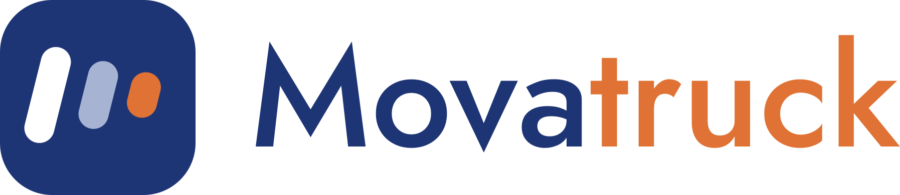

Proposta para a Schaba
Conta aberta, linha por linha, a partir do que a sua operação usa do sistema. Nenhum valor aqui foi estimado no escuro: tudo sai do banco de dados e do servidor.

Proposta · Schaba1 · A sua operação no sistema
Média mensal dos últimos 90 dias, medida direto no banco de dados. É esse volume que o sistema processa, guarda e confere todos os meses.
2 · O que roda por trás
A estrutura é compartilhada entre as transportadoras que usam o Movatruck. Por isso a sua parte é uma fração do que custaria manter tudo isso sozinho. A divisão é proporcional aos caminhões que rodam: hoje, 72% do custo cabe à Schaba.
| Serviço | O que faz pela sua operação | Sua parte/mês |
|---|---|---|
| Servidor de rotas | Calcula o km real pela estrada, com perfil de caminhão. É o que evita km digitado errado e é a base do cálculo de pedágio.1.554 viagens calculadas por mês | R$ 60,02 |
| Navegação ao vivo | Guia o motorista por voz até a carga e a descarga, com servidor próprio. | R$ 17,94 |
| Armazenamento de fotos | Guarda tickets, comprovantes de abastecimento e documentos, com cópia de segurança.1.906 fotos novas por mês | R$ 17,05 |
| WhatsApp da operação | Servidor dedicado ao número da operação: avisos, códigos de acesso, resumos. | R$ 14,55 |
| Banco de dados | Todas as viagens, cadastros e o histórico completo, com backup. | R$ 9,67 |
| Servidor do sistema | Atende o app do motorista e o painel do escritório, aplica as regras e sincroniza o que chega sem sinal. | R$ 5,86 |
| Painel do escritório | As telas de lançamento, conferência e fechamento, no computador e no celular. | R$ 4,10 |
| Servidor, sua parte | R$ 129,18 | |
Como foi dividido: o servidor custa R$ 350/mês e o Movatruck ocupa 75% dele. Essa parte foi dividida entre os serviços pela memória que cada um usa (medida no painel do servidor em 22/09/2026) e depois pela participação da Schaba nos caminhões rodando. Hoje o servidor usa 28% da capacidade: dá pra crescer cerca de 3 vezes sem trocar de máquina.
3 · A conta aberta
Tudo o que o sistema consome para a sua operação ficar de pé, somado ao meu trabalho. Depois, o que eu deixo de cobrar.
| Item | Por mês |
|---|---|
| Servidor: rotas, navegação, fotos, WhatsApp, banco, sistema e paineldetalhado na página anterior | R$ 129,18 |
| Inteligência artificial que confere os ticketsmedido: US$ 1,81 no mês para 620 conferências | R$ 9,77 |
| Mensagens de WhatsApp pela API oficialmedido: 676 mensagens | R$ 26,84 |
| Ferramenta de IA de desenvolvimentoo que permite corrigir e melhorar o sistema no ritmo que a operação pede | R$ 394,87 |
| Contabilidade | R$ 122,05 |
| Publicação do app na App Store (iPhone) | R$ 31,98 |
| Domínios, certificados e publicação de atualizações | R$ 21,54 |
| Custo da operação | R$ 736,24 |
| Meu trabalho: correções, melhorias, suporte e treinamento40 h/mês a R$ 100/h; a sua parte proporcional é de ~29 h | R$ 2.871,79 |
| Reserva e margem (25%)cobre imprevistos: servidor que cai, IA que sobe de preço, mês difícil | R$ 902,01 |
| Impostos (6%) | R$ 287,88 |
| Valor cheio da sua operação | R$ 4.797,92 |
| Meu trabalho não é cobrado nos primeiros 12 mesesas horas, com a margem e o imposto que incidiriam sobre elas | − R$ 3.818,88 |
| A Schaba paga | R$ 979,05 |
4 · A proposta
A cobrança é por caminhão que rodou. Caminhão parado não paga. Se a operação cresce, a conta cresce junto; se diminui, cai.
Preço por caminhão
por caminhão com pelo menos uma viagem no mês
Hoje, com 56 caminhões
valor cheio seria ~R$ 85,70 por caminhão